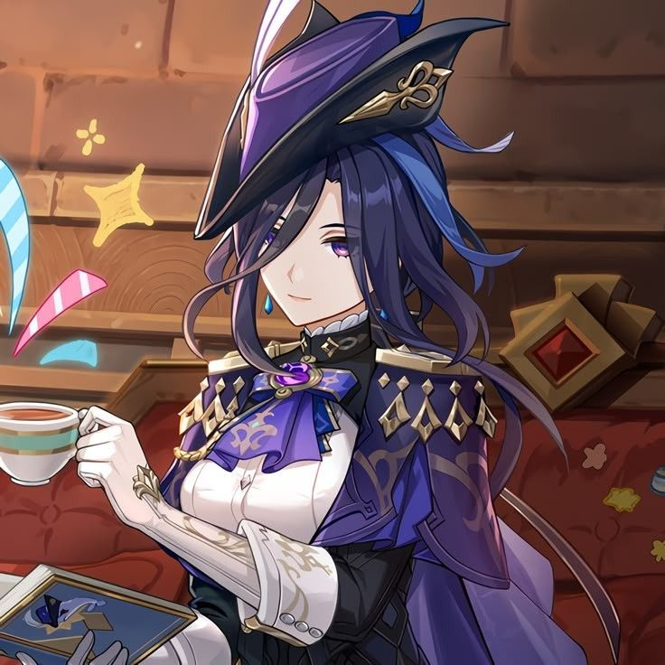

GIỚI THIỆU NHÂN VẬT YÊU THÍCH

Sơ lược về nhân vật
CLORINDE - Clorinde là một nhân vật 5 sao hệ Lôi, DPS chủ lực trong Genshin Impact (Tựa RPG miễn phí của HoYoverse) nổi tiếng với vai trò Đấu Sĩ Vô Địch và Đại diện Công lý của Fontaine, sử dụng kết hợp kiếm và súng với lối chơi nhanh, đẹp mắt và có cơ chế độc đáo. Cô là một chiến binh mạnh mẽ, đại diện cho luật pháp, nhưng cũng có sở thích chơi trò chơi nhập vai trên bàn cờ.
Sở thích
Săn bắn, đấu kiếm, chơi cờ, dành thời gian cho bạn bè.
Teaser nhân vật
Xem video trên YouTube